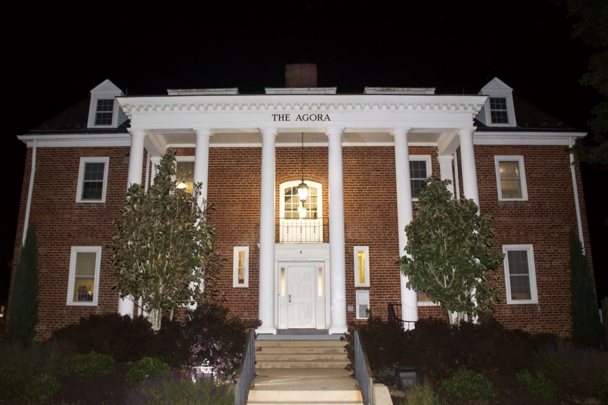
The University of Maryland is home to four Divine Nine sororities, where years of history and tradition meet a new generation of students. The National Pan-Hellenic Council, commonly known as the Divine Nine, is composed of nine historically Black Greek-letter organizations.
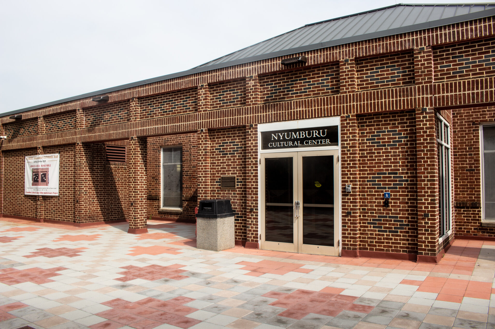
The University of Maryland’s African Student Association (ASA) is concentrating this year’s mission on community service, professional development and mentorship while continuing its decades-long tradition of celebrating African culture.
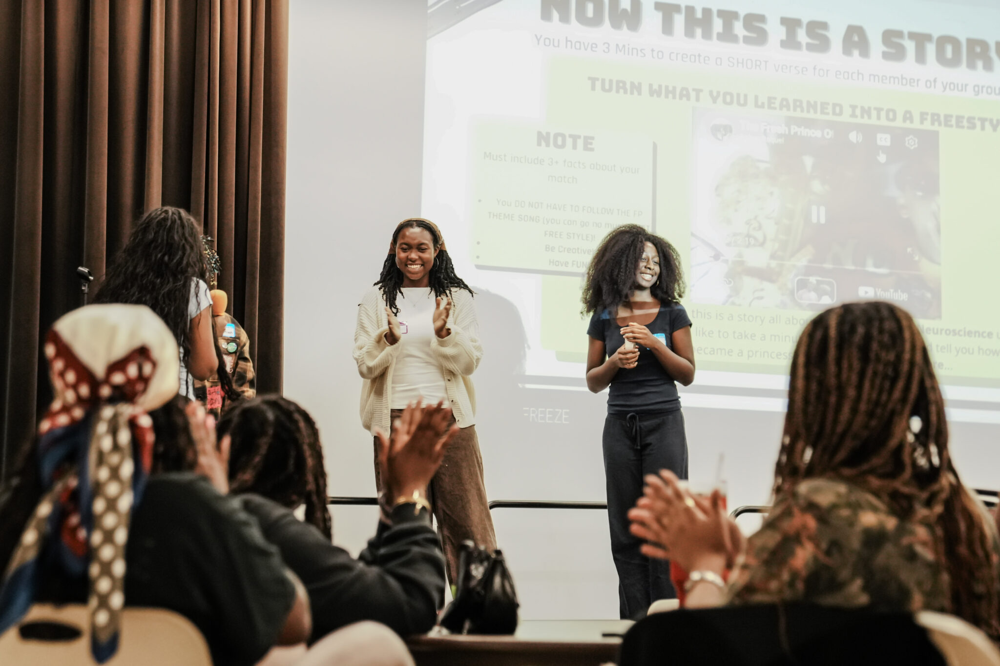
The University of Maryland’s Black Student Union is focusing this school year on building community, leadership and culture while creating a more intentional space for Black students on campus.That mission builds on more than five decades worth of history. According to UMD’s archives, BSU was founded in the fall of 1968 following the disbandment of the campus chapter of Congress of Racial Equality.
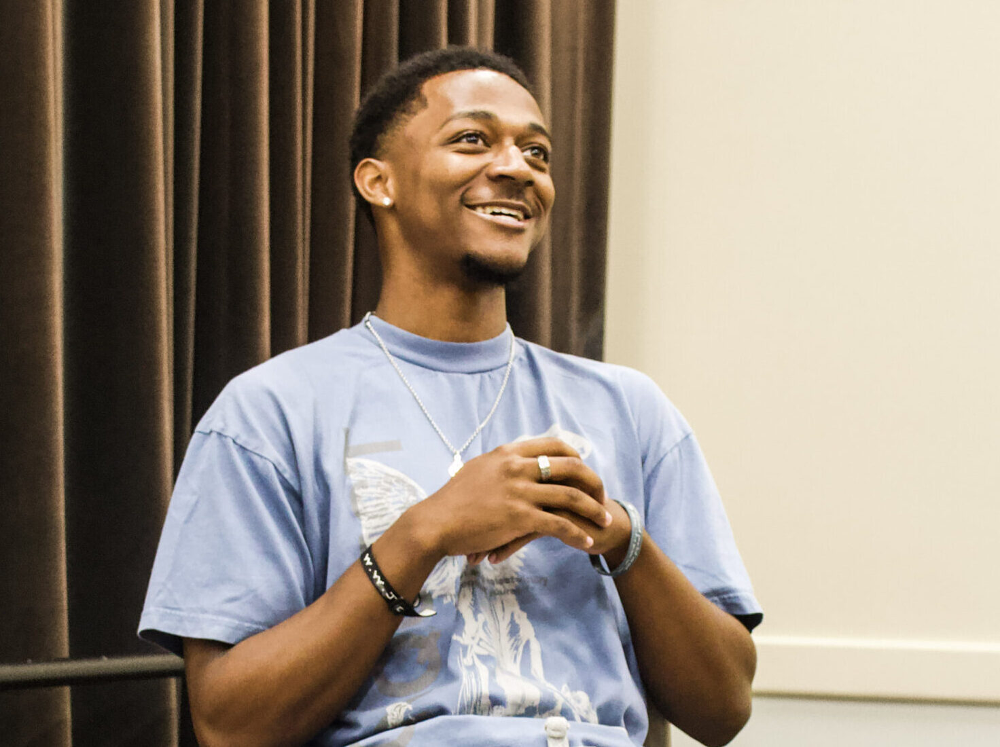
The University of Maryland’s Black Student Union has entered a new chapter under its latest president, Bryant Reed. Reed, who is a junior information systems major, is excited for the future of BSU as the newleader of the club. He is aiming to foster an environment where people can feel secure.
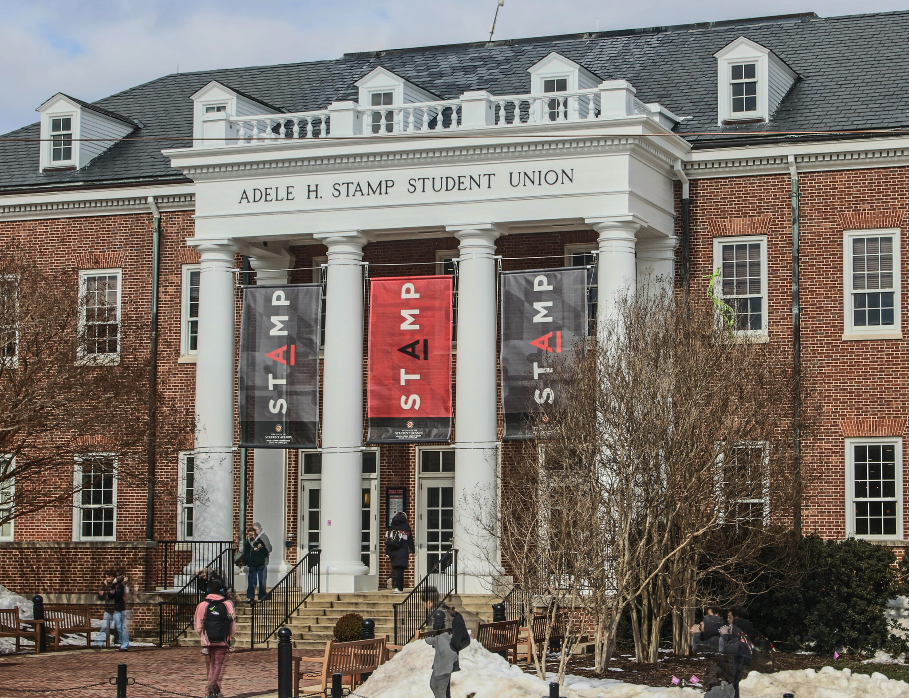
Nearly 100 University of Maryland TERPmail accounts have been compromised since Aug. 1 following a surge of phishing attacks. In response to these attacks, the university will require TERPmail users to use 2-step authentication beginning Sept. 21. A system the Division of Information Technology considers necessary to prevent users from further compromises.
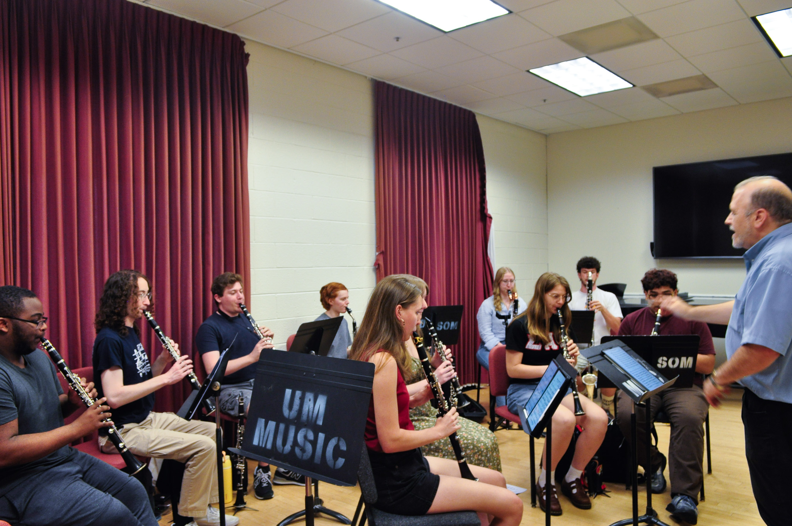
Sixteen students from the University of Maryland’s Clarinet Studio will perform at a weeklong performance tour across England this May. The trip, which is organized under clarinet professor Robert DiLutis, is a student-driven excursion that has occurred several times over the past 10 years. This year, the students were given the option of traveling to Denmark, Spain or England for their performances.
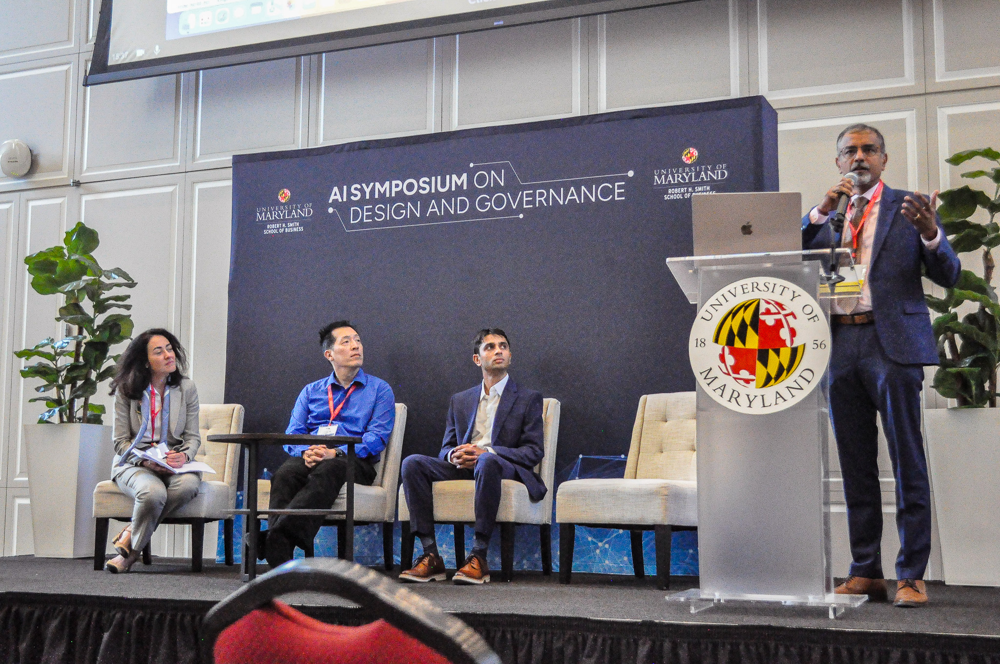
About 120 business leaders, students and faculty gathered for a discussion on how artificial intelligence is shaping public policy and business at the University of Maryland’s Samuel Riggs Alumni Center on Wednesday. The third annual AI Symposium on Design and Governance, hosted by the business school, highlighted the current and future impacts of AI.
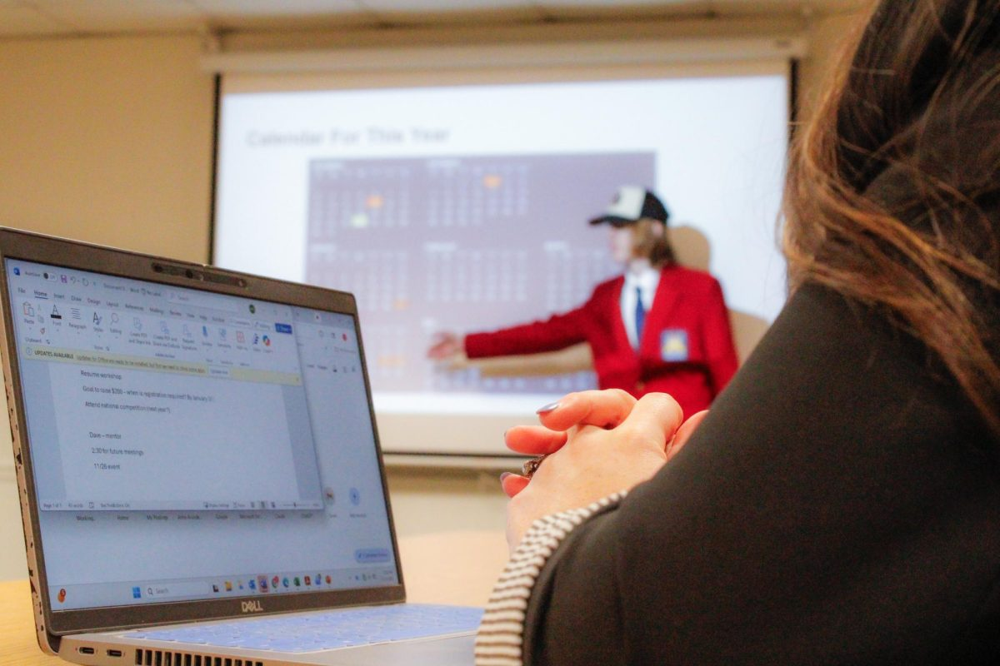
A first-year teacher education student has launched the first-ever SkillsUSA chapter on campus. SkillsUSA is a national organization that aids students with career development and job skills. The club’s mission is to prepare students for the workforce through exercises like resume building and networking and through skills competitions with other colleges and high schools.
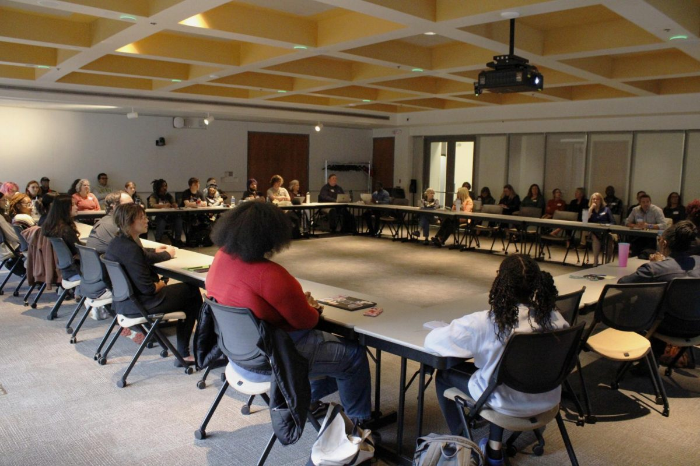
AACC students and staff gathered on Nov. 4 for an open forum on campus hosted by The Faculty Organization to discuss civil discourse. Faculty organized the forum to fill the gap that was left when the college’s annual civility matters event stopped running after last year’s gathering.
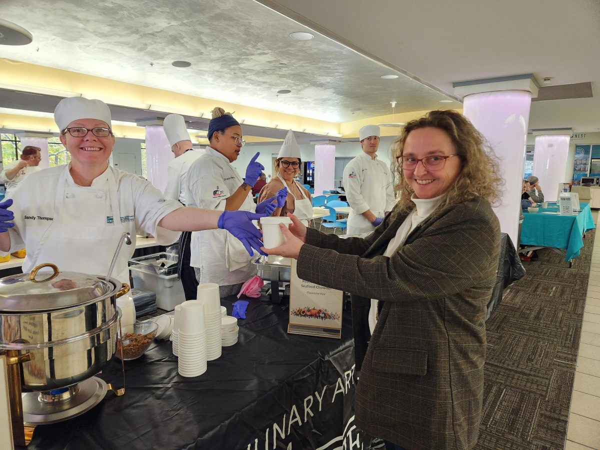
Students, faculty and staff helped raise $2,150 for AACC’s Helplink at an Empty Bowls fundraiser on Nov. 6. Service-learning students from the Hotel,Culinary Arts and Tourism Institute and the Sarbanes Center for Career and Civic Engagement, collaborated to serve $10 soups in the SUN dining hall along with student-made ceramic bowls, handmade rolls and spring water.
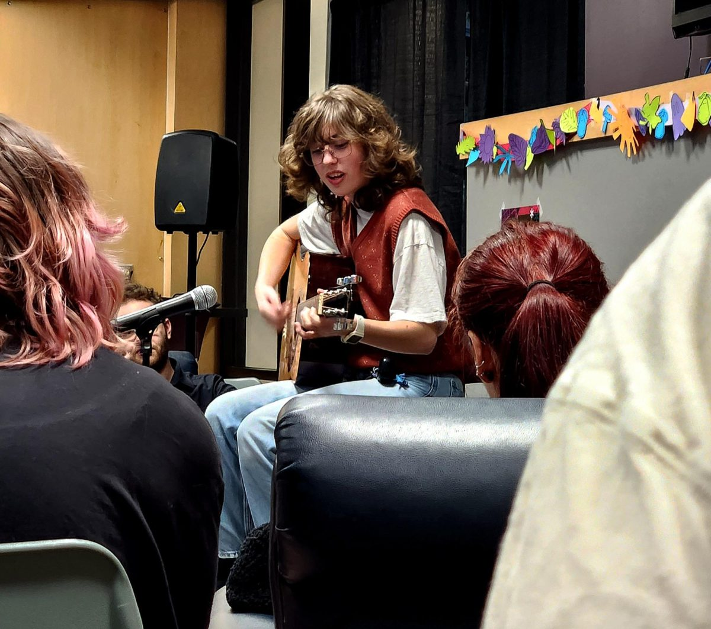
Students gathered in the SUN Dining Hall on Thursday for an open mic night to share their creative work. The event, hosted by AACC’s student journal for the arts, Amaranth, featured a coffeehouse setting where audience members could take center stage to perform in front of their peers. Performances ranged from singing and poetry to comedic skits.
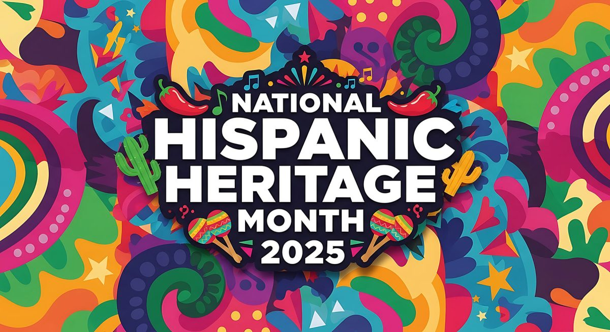
AACC is celebrating Hispanic Heritage Month until Oct. 15 with workshops, art exhibitions and games. The month-long celebration kicked off on Sept. 15. Upcoming events include a demonstration showing how to bake a tres leches cake, a piñata workshop and a lesson in traditional Hispanic dancing.
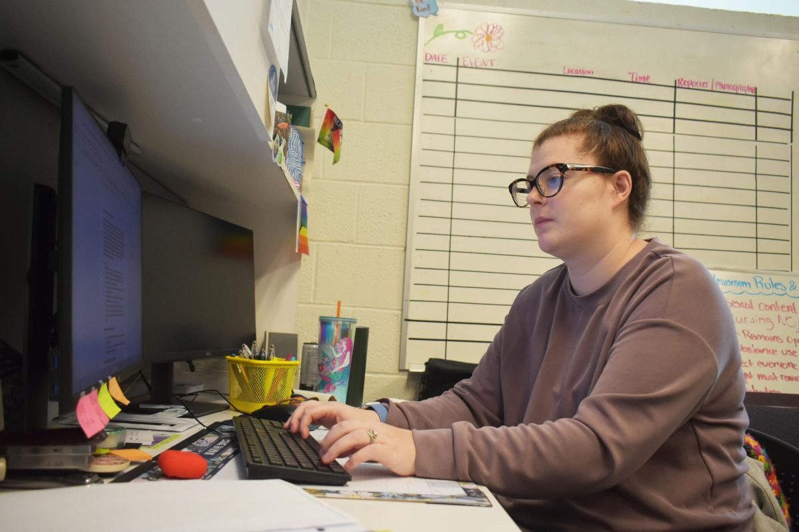
A second-year digital marketing student became the editor-in-chief of AACC’s newspaper in August. Amanda Lewis, a former music store manager, replaced Jose Gonzalez, who graduated in May after serving for one year as editor of Campus Current.